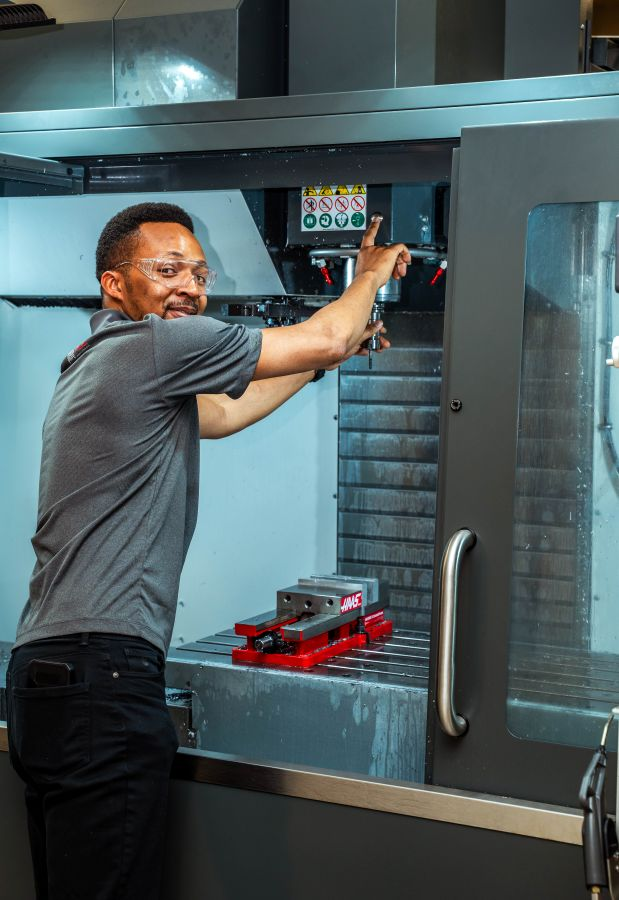

Control charts · Cp / Cpk
Statistical Process Control
Control charts, process capability analysis, and production baselines that show how variation affects yield.
Profile 02 · Quality Engineering
I apply statistical process control and Lean Six Sigma to real production, and I've trained people on the machines and measuring tools that quality depends on. A Green Belt, a Gene Haas Foundation Scholar, and a CNC trainer.
About

Since 2022 I've led the design and rollout of a Statistical Process Control program for a tungsten mining operation, reporting to the CEO. I set production baselines with process capability analysis and built a web app that plots control charts and flags out-of-control processes.
I also work hands-on. I completed the ACE CNC Machining online training and in-person bootcamp, then was hired to train participants in two later bootcamps. As a graduate teaching assistant, I teach precision measurement to NC A&T undergraduates and to middle and high school students through Greensboro SCALE.
My MS in Technology Management at NC A&T focuses on quality, with coursework in Six Sigma Quality, Strategic Concepts in Quality, and Technology Management Analytics.
Honor · November 2026
Awarded through NC A&T's Applied Engineering Technology Department in recognition of my commitment to CNC manufacturing and my pursuit of excellence in my degree. My application drew on the ACE CNC certification, training other participants in two bootcamps, and teaching metrology to undergraduate and K–12 students.
What I do
Control charts · Cp / Cpk
Control charts, process capability analysis, and production baselines that show how variation affects yield.
DMAIC · Root cause
Green Belt methods in practice: root cause analysis, poka-yoke, value stream mapping, and 5S.
Setup · Tooling · G-code
Machine operation, setup, tooling selection, G-code, and Autodesk Fusion, from part design to a finished part.
Calipers · Micrometers
Dimensional inspection and measurement technique: zeroing instruments, reading scales, and repeating readings for consistent results.
SOPs · Competency
SOPs, work instructions, competency sign-offs, safety compliance, and audit-ready training records.
Python · Excel · Forecasting
Regression, forecasting (MAD, MSE, MAPE), KPI dashboards, and web apps that put quality data in front of decision-makers.
Quality work
In the lab and the classroom
Select a photo to view it full size.
Other profiles
Contact
Reach out about a quality engineering role, a process that needs control, or a training program that needs structure.